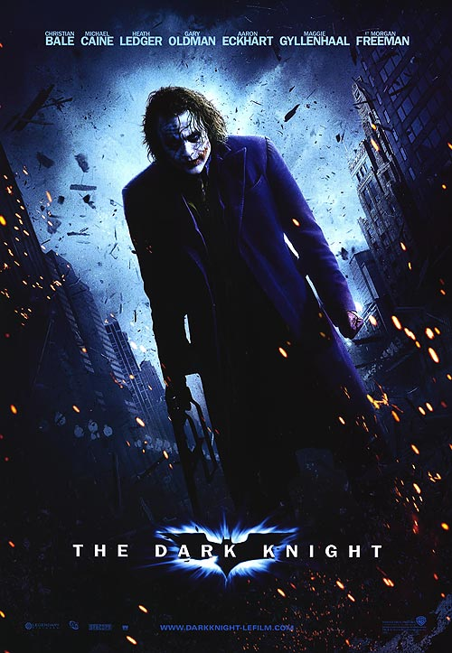

Most Viewed
The Dark Knight

Synopsis:
With the help of allies Lt. Jim Gordon (Gary Oldman) and DA Harvey Dent (Aaron Eckhart), Batman (Christian Bale) has been able to keep a tight lid on crime in Gotham City. But when a vile young criminal calling himself the Joker (Heath Ledger) suddenly throws the town into chaos, the caped Crusader begins to tread a fine line between heroism and vigilantism.The Dark Knight, Christopher Nolan’s follow-up to Batman Begins, expands Batman’s universe with plenty of real locations in Chicago, Hong Kong and London. Memories of Adam West and Cesar Romero’s Sixties hi-jinks are banished completely as the mood shifts from dark to downright grim.
The opening robbery of ‘Gotham National Bank’ by the Joker (Heath Ledger), and his band of disposable clowns, is the old Chicago Post Office, 404 West Harrison – though the exterior seen is the northern corner at West Van Buren Street and Canal Street, where a fake extension was built on the adjoining vacant lot.
 Chicago Post Office Building, West Van Buren Street, Chicago
Chicago Post Office Building, West Van Buren Street, Chicago
The post office building turns up on-screen again, as the ‘Department of Health and Human Services’, the front for the NEST headquarters in Transformers: Dark Of The Moon, a film which shares quite a few Chicago locations with The Dark Knight.
Batman rounds up not just the Scarecrow (a brief, but welcome, return by Cillian Murphy) but a host of other baddies and a few bogus Batmen, too, in the parking garage at 200 West Randolph Street (that’s the same garage which was the start of the Tumbler’s rooftop chase in Batman Begins).
200 West Randolph Street, ChicagoIt’s a sign of the change of tone from the previous film that the HQ of ‘Wayne Enterprises’ – which was the old 1930 art deco Chicago Board of Trade Building – is now the 1965 Richard J Daley Center, towering over Daley Plaza on Washington Street between Clark and Dearborn Streets. And, yes, of course, this is the plaza with the Picasso sculpture seen at the climax of The Blues Brothers.
Richard J Daley Center, Daley Plaza, Washington Street, ChicagoThe fundraiser for Harvey Dent – “Any psychotic ex-boyfriends I should know about?” – crashed by the Joker, is held at Building 2 of Illinois Center Buildings, 111 East Wacker Drive – a complex of five office buildings and a couple of hotels, connected by an enclosed concourse lined with shops and restaurants (and another design by Mies van der Rohe), overlooking the Chicago River near the foot of the Michigan Avenue Bridge.
As there is no ‘Wayne Manor’ (it’s being rebuilt after the fire – remember?), the lobby of One Illinois Center, part of the same complex, was transformed into the main living area of Bruce Wayne’s glitzy new penthouse. The lobby was surrounded by green screens so that views over the city could be digitally added later.
Illinois Center Buildings, 111 East Wacker Drive, ChicagoThe climactic hand-to-hand face-off between Batman and the Joker is a conflation of two separate locations: the exterior is Chicago's Trump Tower, 401 North Wabash Avenue, which was under construction during filming. The completed tower, incidentally, is home to villainous Dylan Gould (Patrick Dempsey) in Transformers: Dark Of The Moon.
For the actual fight, the interior was re-created in England, in Shed 2, one of the two gigantic airship hangars at Cardington, a couple of miles southeast of Bedford in Bedfordshire (rail: Bedford, from London Euston or King’s Cross), now converted into a soundstage (part of Batman Begins was also filmed here).
Trump Tower, North Wabash Avenue, Chicago